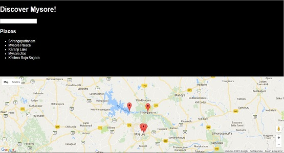
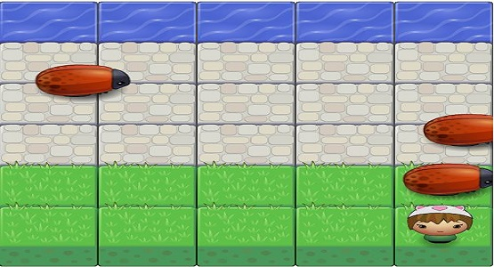
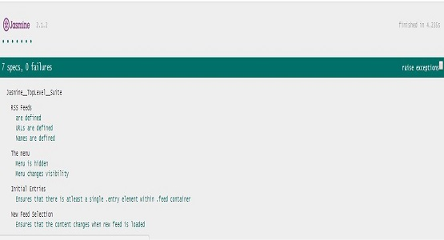
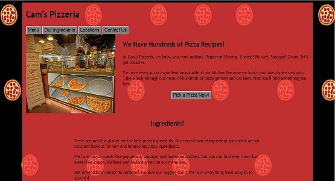
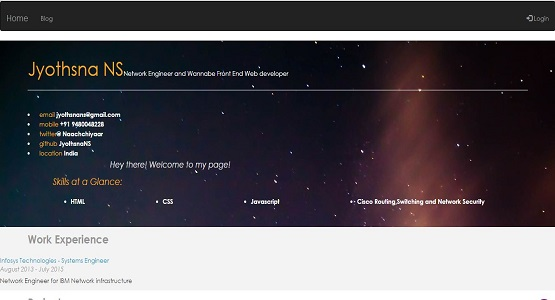
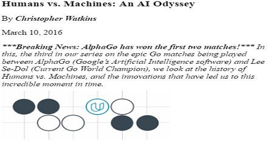

Jyothsna NS
Front-end Web Developer
Featured Work

Neighbourhood Map

Classic Arcade Game Clone
https://jyothsnans.github.io/frontend-nanodegree-arcade-game/

Feed Reader testing

Website Optimization
https://jyothsnans.github.io/frontend-nanodegree-mobile-portfolio/views/pizza.html/

Online Resume
